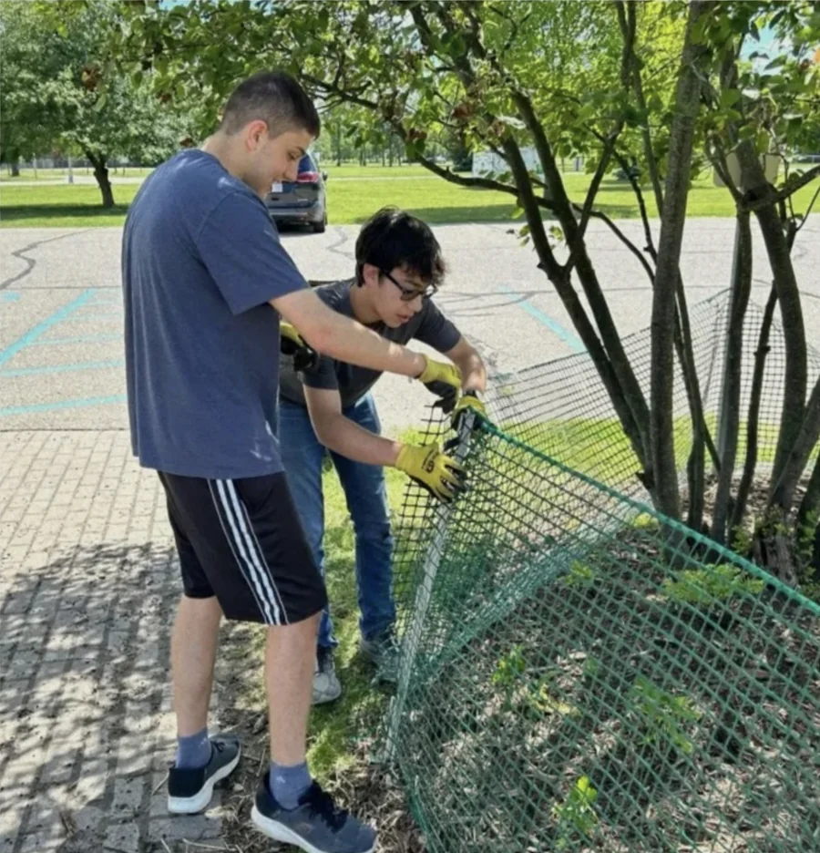
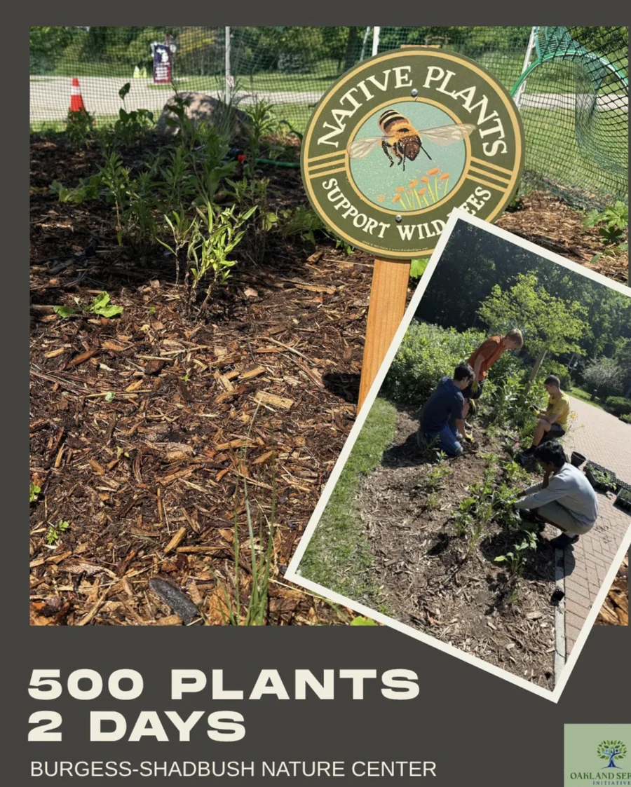
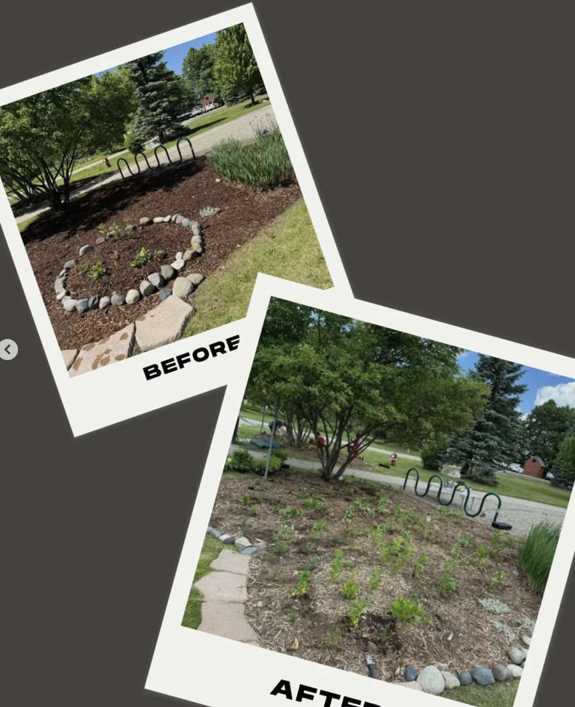

Environmental service
Putting down roots.
Making room to grow.
$3,000+
worth of plants planted
More than $3,000 across our planting work.

500A milestone from our planting work.
plants in two days.
At Burgess-Shadbush Nature Center, volunteers turned two days of work into a lasting addition to the landscape.
June 19–20, 2026

A change you can see
Care, made visible.
The planting project’s before-and-after images capture the work taking shape.
